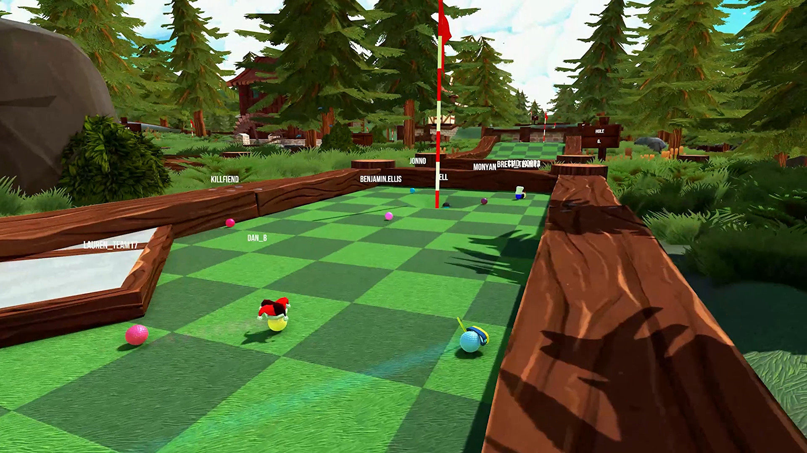
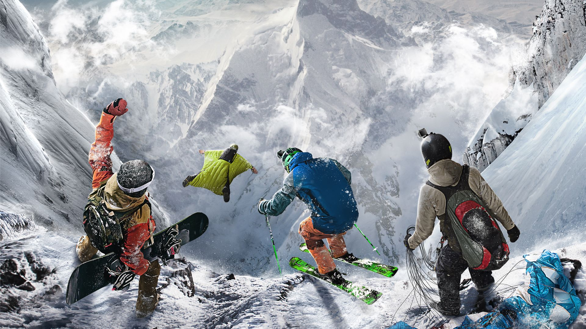

Rocket League is one of the best football games of all time. Yes, it replaces a team of 11 players with three rocket-powered cars, potentially adorned with a stack of pancakes or a sombrero, and it’s still an excellent football game. The FIFA and PES communities constantly bicker amongst themselves about scripted gameplay and pay to win mechanics; you won’t hear any of that about Rocket League. Psyonix has perfected the mechanics of Rocket League, allowing the game to be accessible to most people while maintaining an absurdly high skill ceiling. The esports scene for Rocket League shows just how much depth there is to a game about flying cars. Even better, Rocket League is free to play and features cross-platform play on every platform. If you have the slightest interest in hitting a massive ball with a flying car, give Rocket League a try.
Golf With Your Friends

(Image credit: PaťoMaratonista)
Golf With Your Friends is exactly what it sounds like – play with up to 11 friends as you make your way through themed mini golf courses. Turn on power ups to freeze your opponent’s ball, and lay down lanes of honey to stop players in their tracks. The game even comes with a built-in level editor for players who have a keen eye for golf courses. Golf With Your Friends can be played simultaneously online or locally via the hot seat option; perfect with Steam’s Remote Play feature. The best part about this game is that the barrier to entry doesn’t exist – no real life golf skills apply here; simply pick a direction, decide how hard to hit the ball, and pray for the best.
Steep

(Image credit: TatranskyKamzik)
Ride a massive open world across the Alps, where the powder is always fresh and the run never ends. Defy and master the mountain alone or with friends on skis, wingsuits, snowboards and paragliders. Record and share your best stunts.Rip through the terrains of a snowy open world. Strap in and suit up for some epic stunts as you ride your way to the peak of the excitement. Experience 360° of visual freedom while you explore the Alps. Let your gaze immerse you in the massive winter playground. Situational awareness has never been more fluid with the integrated Tobii Eye Tracking feature set. Using your gaze to shred the hills enhances your gameplay and lets you embark on the ride of your life.
 Valhalla
SPORTS
Domov
Valhalla
SPORTS
Domov